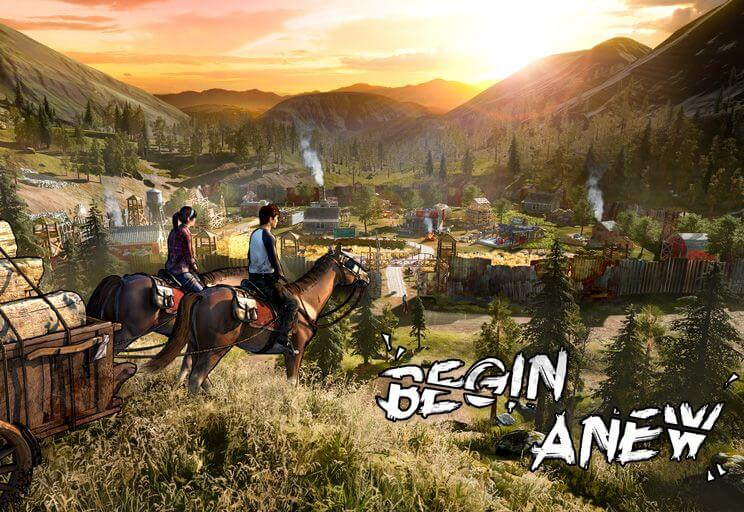
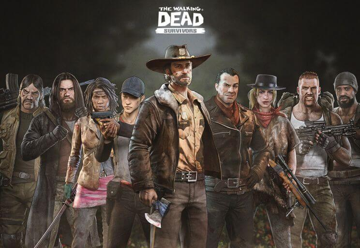
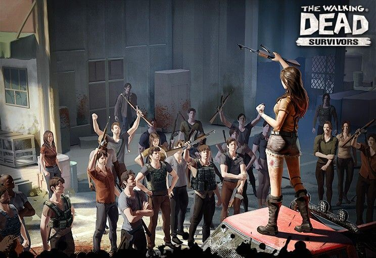

Featured Server
Explore one of the most active and competitive servers in The Walking Dead: Survivors. From coordinated alliances to large-scale wars, this featured server highlights what peak teamwork and strategy look like. Learn how top clans operate, how leadership decisions shape outcomes, and what makes this server stand out from the rest.

Formation Guide
Master the art of formations and survivor synergy. This guide breaks down optimal setups for PvP, PvE, and special events, helping you understand positioning, role balance, and counter-strategies. Whether you’re free-to-play or a heavy spender, smart formations can be the difference between victory and defeat.

Content Creators
Discover creators who shape the TWDS community through guides, battle breakdowns, and update insights. From in-depth analysis to live war coverage, these creators provide valuable perspectives that help players stay informed, improve faster, and adapt to the evolving meta.